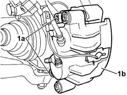
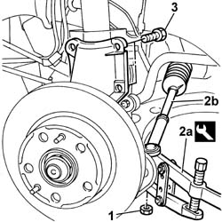
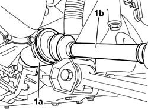
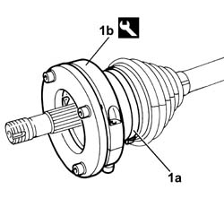

2710A12 DRIVE SHAFT COMPLETE WITH JOINTS (ONE), L/H OR R/H - R + R WITH DIFFERENTIAL END JOINT OR WHEEL END JOINT DISCONNECTED
- Path
- Procedures > 27 AXLE > 2710 FRONT AXLE > 2710A DRIVE SHAFTS AND JOINTS > 2710A12 DRIVE SHAFT COMPLETE WITH JOINTS (ONE), L/H OR R/H - R + R WITH DIFFERENTIAL END JOINT OR WHEEL END JOINT DISCONNECTED
- Kind
- repair procedure (removal / refitting; the operation number is the code)
- Applies to
- all engines; all production periods
- Interactive page
- https://sloeber94.github.io/elrnDB-fDct/en/#/244001060
Applies to: all engines; all production periods
 Removing
Removing
 Refitting
RefittingPosition a column hydraulic lift under the track control arm in order to work safely.
1. Undo the fixing bolts (1a) and remove the left brake caliper-bracket assembly (1b) from the brake disc without disconnect the fluid pipes.

Applies to: all engines; all production periods
1. Undo the nut fixing the track rod end to the steering knuckle.
2. Extract the track rod end (2b) from the housing in the steering knuckle using the tool (2a).
Description | Code | Function | |
|---|---|---|---|
2a | Head extractor | 1.847.038.000 | Ball joint removal |
3. Undo the bolts fixing the steering knuckle to the shock absorber.

Applies to: all engines; all production periods
1. Break the band (1a) securing the differential internal driveshaft and remove the right driveshaft (1b).

Applies to: all engines; all production periods
Refitting
RemovingPosition the driveshaft in the housing on the vehicle.
Connect the driveshaft to the differential internal driveshaft.
1. Fit and new boot and band (1a) securing it to the differential internal driveshaft using the tool (1b).
Description | Code | Function | |
|---|---|---|---|
1b | Caliper | 1.870.857.000 | Constant velocity joint gaiter installation |

Applies to: all engines; all production periods
Tighten the bolts fixing the steering knuckle to the shock absorber to torque.
Value - daNm | Fastening | Component | Ø | |
|---|---|---|---|---|
. | 19 | Bolt | FRONT HUB STRUT | M16 |
. Tighten the nut fixing the ball joint to the steering rod to torque.
Value - daNm | Fastening | Component | Ø | |
|---|---|---|---|---|
. | 6.9 | Nut | ADJUSTABLE LINK BALL JOINTS | M16 |
Fit the brake caliper - bracket assembly and tighten the bolts fixing the bracket to the left disc to torque.
Value - daNm | Fastening | Component | Ø | |
|---|---|---|---|---|
. | 21 | Bolt | FRONT BRAKE CALIPER BRACKET | M16 |